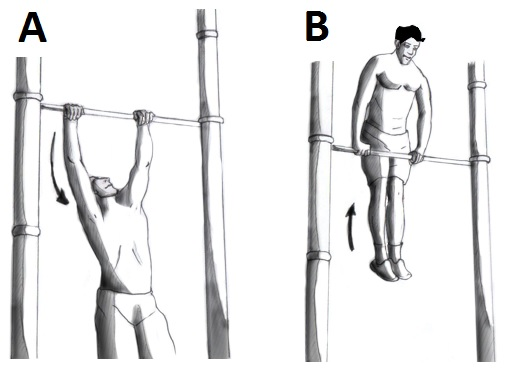
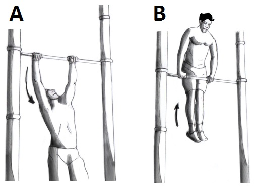
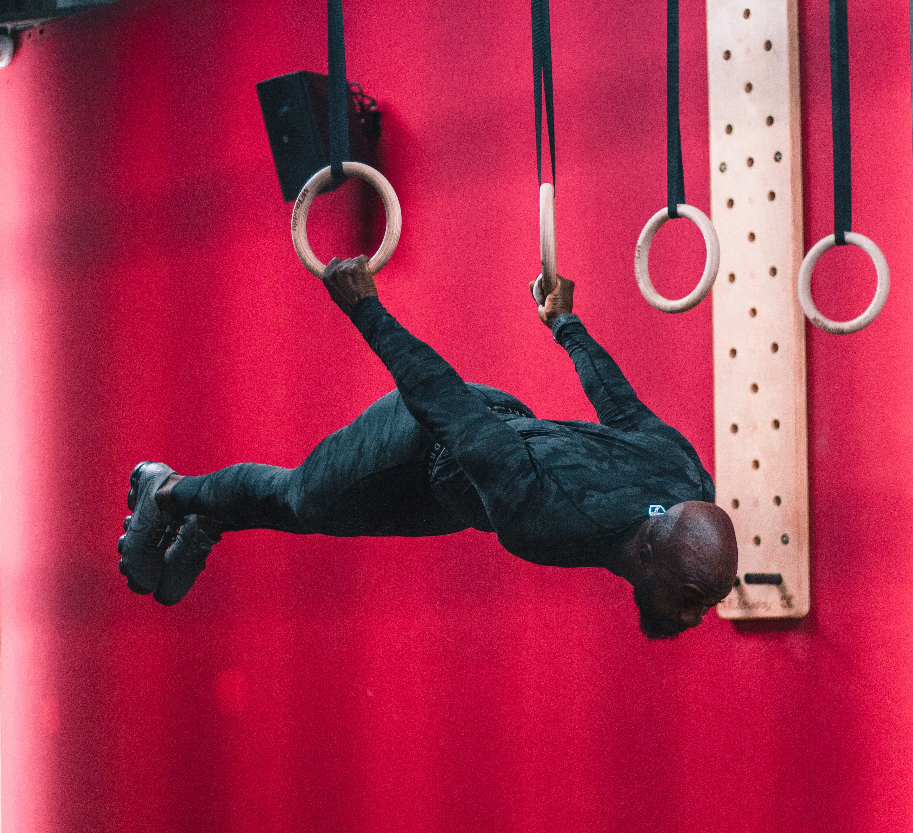
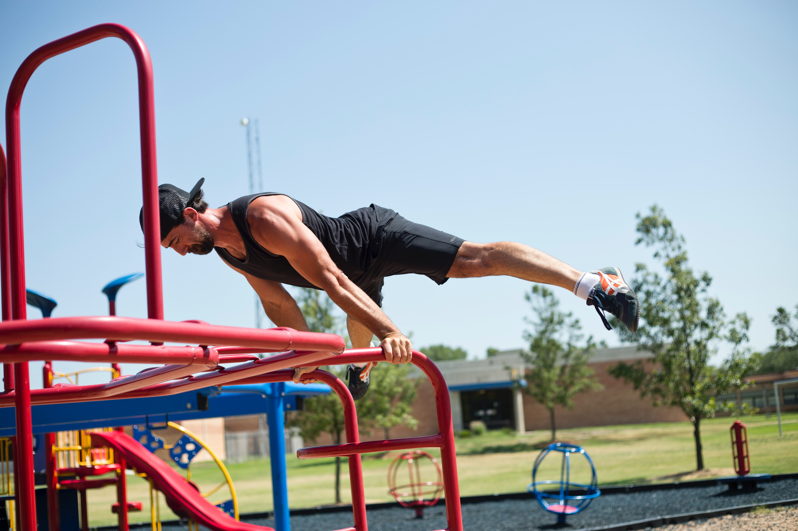

Doelen in calisthenics
Bij calisthenics kan je verschillende doelen voor jezelf stellen om te behalen, hieronder staat een lijst met populaire doelen die je kan behalen met training. Focus je op een doel per keer, start pas een nieuw doel als je klaar bent met je doel.Muscle up
Bij een muscle up kom je vanaf onder de stang door kracht boven de stang uit, het ziet er als volgt uit:  Om een muscle up te kunnen heb je veel kracht in je rug, schouders, armen en buikspieren nodig.
Bij een muscle up kom je vanaf onder de stang door kracht boven de stang uit, het ziet er als volgt uit:  Om een muscle up te kunnen heb je veel kracht in je rug, schouders, armen en buikspieren nodig.
Handstand
Bij een handstand balanceer je je lichaamsgewicht op je handen, het ziet er als volgt uit: Om de handstand te kunnen moet je vooral goed kunnen balanceren.
Om de handstand te kunnen moet je vooral goed kunnen balanceren.
Bij een handstand balanceer je je lichaamsgewicht op je handen, het ziet er als volgt uit:
Om de handstand te kunnen moet je vooral goed kunnen balanceren.Human flag
Bij een human flag hang je verticaal aan een stang, het ziet er als volgt uit:
 Voor de human flag heb je heel veel kracht in je schouders, armen en buikspieren nodig.
Voor de human flag heb je heel veel kracht in je schouders, armen en buikspieren nodig.back lever
Bij de back lever hang je horizontaal en hou je je armen gestrekt in een 45 graden positie, het ziet er als volgt uit:  Back lever vraagt vooral kracht uit je rug, schouders, armen en buikspieren.
Planche
Bij een planche hou je je lichaam horizontaal boven de grond met je armen gestrekt, het ziet er als volgt uit:  Bij planche heb je extreem veel kracht nodig uit je rug, schouders, armen en buikspieren.
Wanneer je door alle doelen heen bent kan je met wat creativiteit nog heel wat doelen bedenken zoals push ups op maar twee vingers of handstand op een horizontale stang.